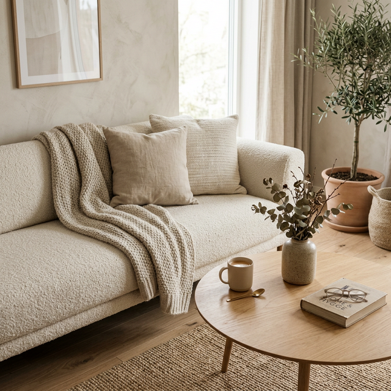
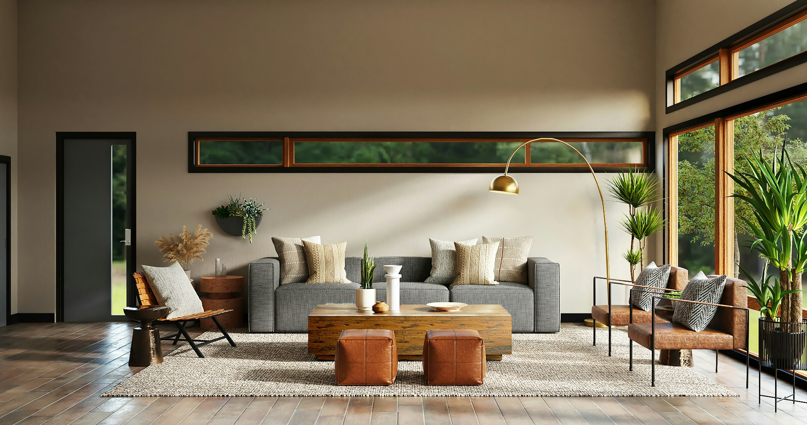
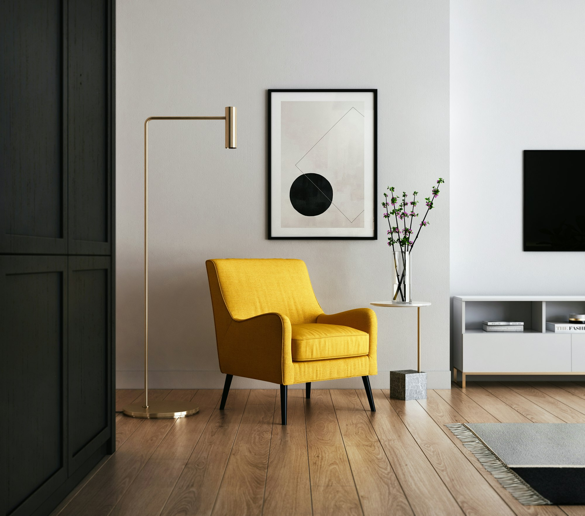
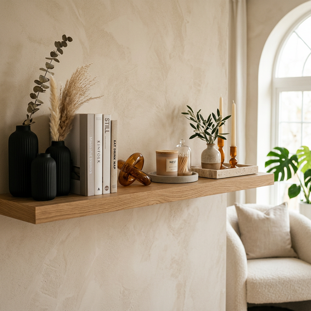

Your sofa is more than just a place to sit—it's the anchor of your living room's identity. The right sofa can completely transform the vibe of your home, turning a simple room into an editorial-worthy retreat. Whether you're hosting an elegant evening or curling up for a movie marathon, the centerpiece of your space should reflect your style and commitment to quality.
Luxury doesn't always have to come with a designer price tag and a six-month wait time. Amazon has quietly become a treasure trove for premium furniture finds, from cloud-soft velvet modulars to buttery Italian leather pieces. These high-end options offer the perfect blend of aesthetic appeal and everyday durability.
Thousands of reviewers are already obsessed with these finds because they bridge the gap between "fast furniture" and heirloom quality. They look significantly more expensive than they are, providing that coveted "quiet luxury" look without the boutique markup.
📌 Pin this guide to save inspiration for your dream living room makeover!
Follow us for more moodboards →13 Best Premium Sofas & Sectionals on Amazon

Cloud-Soft Luxury: Velvet Modular Sectional That Steals the Show
This Belffin Modular Sectional offers unparalleled flexibility and a rich, light-catching velvet finish. The deep seating and plush cushions make it the ultimate statement piece for a modern sanctuary.
Perfect for: Elegant entertainment spaces and larger open-plan living rooms.
View on Amazon
Ultra-Cozy Chenille Modular Sofa with Ottoman — Luxe Comfort Meets Flexibility
The Morden Fort Chenille Sectional is the definition of cozy luxury. Its textured fabric adds immediate depth to your room, while the included ottoman allows for endless configuration possibilities.
Perfect for: Cozy lounges or family rooms where comfort is the priority.
View on Amazon
Sleek L-Shape Sectional Sofa — Modern Design for Spacious Living Rooms
The Rivet Revolve Modern Sectional is an Amazon-exclusive powerhouse. It features clean lines, mid-century modern influence, and a silhouette that works in almost any aesthetic.
Perfect for: Open-concept homes and lovers of modern minimalism.
View on Amazon
Italian-Inspired Leather Sectional — Premium Feel Without Designer Price
The Poly & Bark Napa Sectional is a legendary Amazon find. Made with full-aniline dyed Italian leather, it develops a beautiful patina over time, rivaling sofas triple its price.
Perfect for: Sophisticated living rooms that need a touch of warmth and heritage.
View on Amazon
Velvet Chesterfield L-Shape — Elegant Centerpiece for Stylish Interiors
The Modway Empress Chesterfield brings old-world charm into the modern era. Its deep tufting and vibrant velvet colors make it an undeniable focal point for any room.
Perfect for: Formal living rooms or editorial-style apartment setups.
View on Amazon
Modular Family-Ready Sectional — Plush & Customizable Seating
The Honbay Modular Sofa is designed for the reality of family life without sacrificing an ounce of style. Swap seat positions as needed to fit your gathering's vibe.
Perfect for: Large families and those who love to host movie nights.
View on Amazon
Convertible Cloud Sectional — Cozy, Stylish & Functional
The Stone & Beam Lauren Down-Filled Sofa is often called the "Amazon Cloud Couch." Its overstuffed cushions and deep seats are designed for pure relaxation.
Perfect for: Creating a "loungy" vibe in a master suite or living area.
View on Amazon
Compact Yet Classy Reversible Sectional — Modern Minimalist Pick
The smaller cousin of the Revolve, this Rivet Reversible Sectional is the ultimate solution for urban living. Minimalist, modern, and perfectly scaled for smaller footprints.
Perfect for: Studio apartments and medium-sized urban spaces.
View on Amazon
U-Shaped Luxury Sectional — Spacious & Insta-Worthy Setup
This Shintenchi U-Shaped Sectional maximizes every inch of your living room. Its symmetrical design creates a "conversation pit" feeling that is both social and visually impressive.
Perfect for: Spacious living rooms and active social homes.
View on Amazon
Velvet Curved Back Sectional — Artistic & Stylish Centerpiece
For those who view furniture as art, the TOV Furniture Curved Sofa is a dream. Its sculptural silhouette and velvet finish echo the aesthetic of high-end boutique hotels.
Perfect for: Design-forward living rooms and creative spaces.
View on AmazonModern Chesterfield Sofa – Plush Tufting, Premium Texture
The Christopher Knight Home Alisa Chesterfield offers a fresh, contemporary take on the classic tufted sofa, featuring slim legs and a more streamlined profile.
Perfect for: Modern-traditional homes and office studies.
View on Amazon
Reversible Ottoman Sectional — Lounge & Style Flexibility
The Stone & Beam Westview excels in versatility. Move the ottoman to either side to change your layout in seconds, or use it as a standalone coffee table surface.
Perfect for: People who love to frequently rearrange their sanctuary.
View on AmazonStatement Leather & Fabric Mix Sofa — High-End Look with Everyday Comfort
The Poly & Bark Essex (or similar mixed-media finds) combines the rugged durability of leather with the softness of high-performance fabric for a truly curated look.
Perfect for: Creating a "collected over time" editorial aesthetic.
View on AmazonHow to Pin These Looks
Loved these finds? Save them to your dream home boards to keep your interior styling goals organized. Use these 📌 pin phrase suggestions:
Expert Styling Tips for Premium Sofas
- Texture over everything: Pair rich velvet or leather sofas with textured jute rugs and smooth metallic accents for a balanced, premium feel.
- Material Contrast: Mix textures like velvet with leather or leather with wood to create a layered, multi-dimensional aesthetic.
- Intentional Lighting: Use oversized floor lamps for ambient lighting that highlights the texture and form of your sofa at night.
- Jewel Tones: Layer throw pillows in neutral jewel tones (think emerald, amber, or deep sapphire) for a sophisticated, luxe finish.
Conclusion
🛋️ From the plush embrace of a cloud-like chenille to the timeless sophistication of Italian leather, these luxury sofas have the power to transform any space into a high-end sanctuary. Amazon’s premium finds prove that you can achieve a designer look with the convenience of modern shopping.
📌 Don't forget to save this guide to Pinterest for your upcoming living room refresh! Explore the links above to find the perfect anchor for your sanctuary.